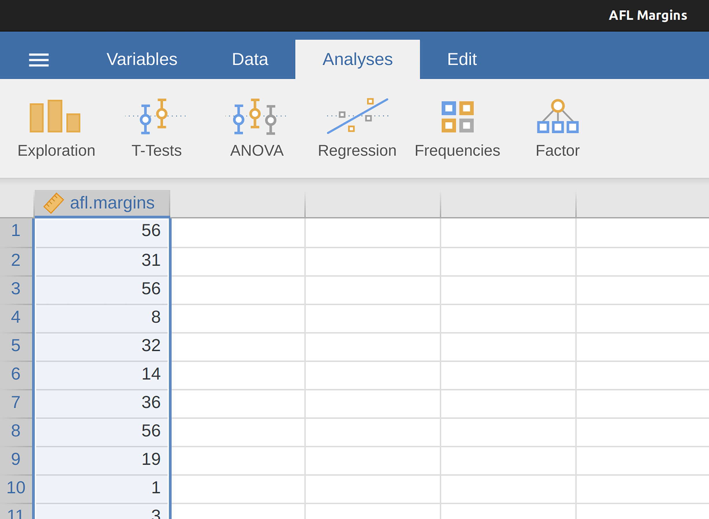
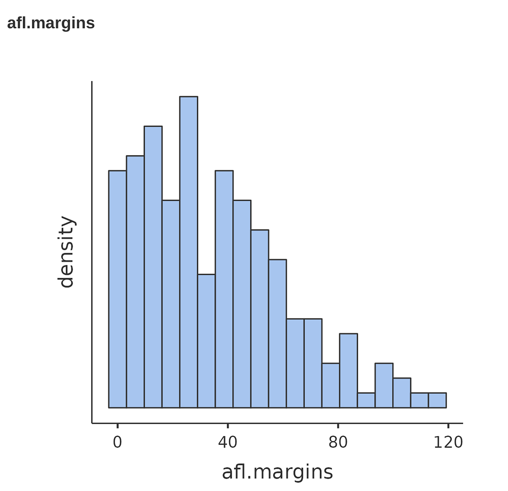
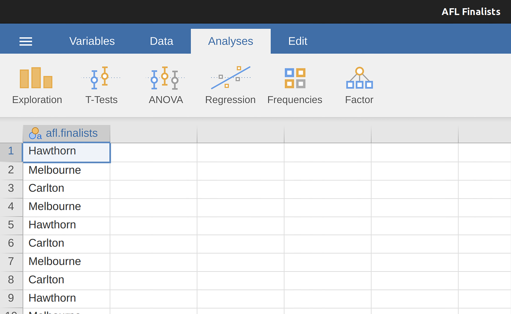
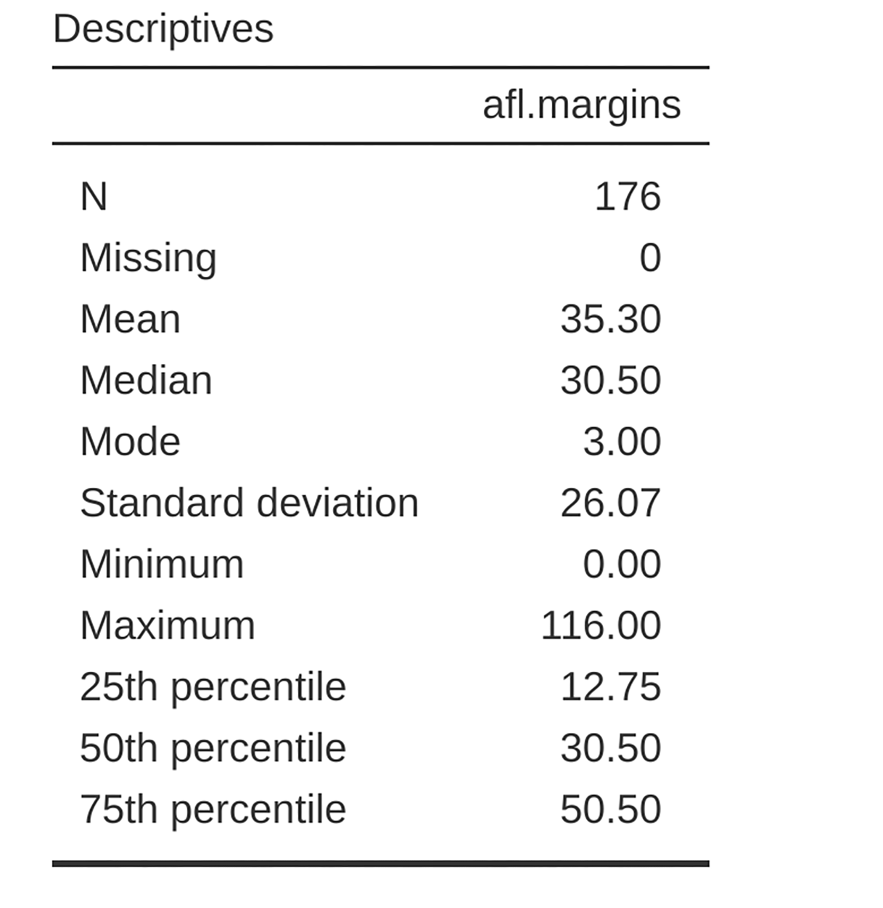
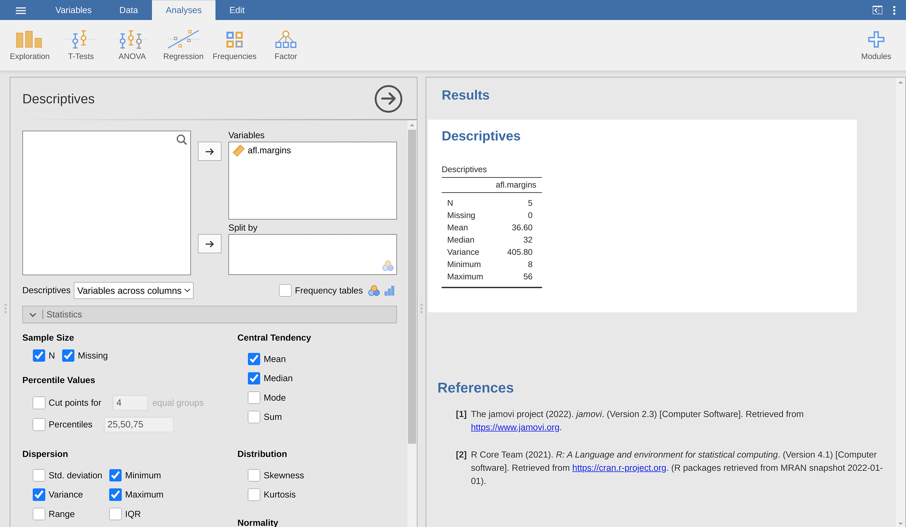
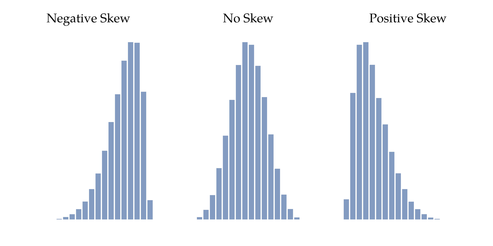
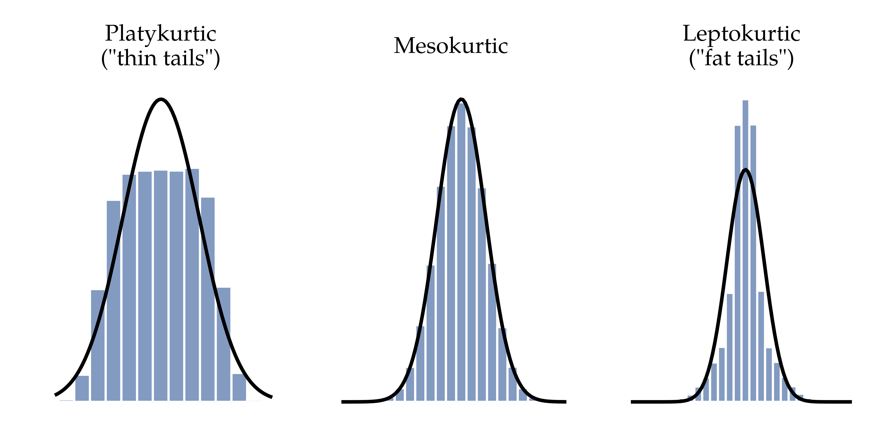
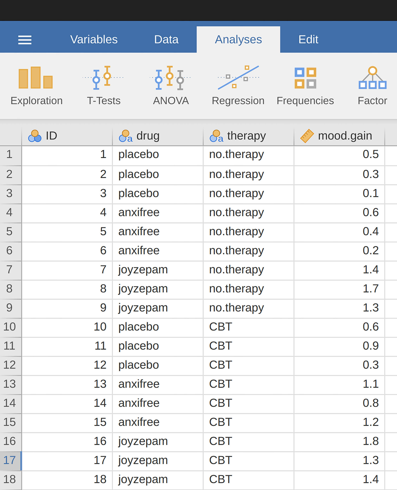

4 Descriptive statistics
Any time that you get a new data set to look at one of the first tasks that you have to do is find ways of summarising the data in a compact, easily understood fashion. This is what descriptive statistics (as opposed to inferential statistics) is all about. In fact, to many people the term “statistics” is synonymous with descriptive statistics. It is this topic that we’ll consider in this chapter, but before going into any details, let’s take a moment to get a sense of why we need descriptive statistics. To do this, let’s open the aflsmall_margins file and see what variables are stored in the file, see Figure 4.1.
In fact, there is just one variable here, afl.margins. We’ll focus a bit on this variable in this chapter, so I’d better tell you what it is. Unlike most of the data sets in this book, this is actually real data, relating to the Australian Football League (AFL).1 The afl.margins variable contains the winning margin (number of points) for all 176 home and away games played during the 2010 season.
This output doesn’t make it easy to get a sense of what the data are actually saying. Just “looking at the data” isn’t a terribly effective way of understanding data. In order to get some idea about what the data are actually saying we need to calculate some descriptive statistics (this chapter) and draw some nice pictures (Chapter 5). Since the descriptive statistics are the easier of the two topics I’ll start with those, but nevertheless I’ll show you a histogram of the afl.margins data since it should help you get a sense of what the data we’re trying to describe actually look like, see Figure 4.2. We’ll talk a lot more about how to draw histograms in Section 5.1 in the next chapter. For now, it’s enough to look at the histogram and note that it provides a fairly interpretable representation of the afl.margins data.

4.1 Measures of central tendency
Drawing pictures of the data, as I did in Figure 4.2, is an excellent way to convey the “gist” of what the data is trying to tell you. It’s often extremely useful to try to condense the data into a few simple “summary” statistics. In most situations, the first thing that you’ll want to calculate is a measure of central tendency. That is, you’d like to know something about where the “average” or “middle” of your data lies. The three most commonly used measures are the mean, median and mode. I’ll explain each of these in turn, and then discuss when each of them is useful.
4.1.1 The mean
The mean of a set of observations is just a normal, old-fashioned average. Add all of the values up, and then divide by the total number of values. The first five AFL winning margins were 56, 31, 56, 8 and 32, so the mean of these observations is just:
\[ \frac{56 + 31 + 56 + 8 + 32}{5} = \frac{183}{5} = 36.60 \] Of course, this definition of the mean isn’t news to anyone. Averages (i.e., means) are used so often in everyday life that this is pretty familiar stuff. However, since the concept of a mean is something that everyone already understands, I’ll use this as an excuse to start introducing some of the mathematical notation that statisticians use to describe this calculation, and talk about how the calculations would be done in jamovi.
The first piece of notation to introduce is \(N\), which we’ll use to refer to the number of observations that we’re averaging (in this case \(N = 5\)). Next, we need to attach a label to the observations themselves. It’s traditional to use X for this, and to use subscripts to indicate which observation we’re actually talking about. That is, we’ll use \(X_1\) to refer to the first observation, \(X_2\) to refer to the second observation, and so on all the way up to \(X_N\) for the last one. Or, to say the same thing in a slightly more abstract way, we use \(X_i\) to refer to the i-th observation. Just to make sure we’re clear on the notation, Table 4.1 lists the 5 observations in the afl.margins variable, along with the mathematical symbol used to refer to it and the actual value that the observation corresponds to.
| the observation | its symbol | the observed value |
|---|---|---|
| winning margin, game 1 | \( X_1 \) | 56 points |
| winning margin, game 2 | \( X_2 \) | 31 points |
| winning margin, game 3 | \( X_3 \) | 56 points |
| winning margin, game 4 | \( X_4 \) | 8 points |
| winning margin, game 5 | \( X_5 \) | 32 points |
[Additional technical detail2]
4.1.2 Calculating the mean in jamovi
Okay, that’s the maths. So how do we get the magic computing box to do the work for us? When the number of observations starts to become large it’s much easier to do these sorts of calculations using a computer. To calculate the mean using all the data we can use jamovi. The first step is to click on the ‘Exploration’ button and then click ‘Descriptives’. Then you can highlight the afl.margins variable and click the ‘right arrow’ to move it across into the ‘Variables box’. As soon as you do that a Table appears on the right hand side of the screen containing default ‘Descriptives’ information; see Figure 4.3.
As you can see in Figure 4.3, the mean value for the afl.margins variable is 35.30. Other information presented includes the total number of observations (N=176), the number of missing values (none), and the Median, Minimum and Maximum values for the variable.
4.1.3 The median
The second measure of central tendency that people use a lot is the median, and it’s even easier to describe than the mean. The median of a set of observations is just the middle value. As before let’s imagine we were interested only in the first 5 AFL winning margins: \(56\), \(31\), \(56\), \(8\) and \(32\). To figure out the median we sort these numbers into ascending order:
8, 31, 32, 56, 56
From inspection, it’s obvious that the median value of these 5 observations is 32 since that’s the middle one in the sorted list (I’ve put it in bold to make it even more obvious). Easy stuff. But what should we do if we are interested in the first 6 games rather than the first 5? Since the sixth game in the season had a winning margin of 14 points, our sorted list is now
8, 31, 32, 56, 56
and there are two middle numbers, 31 and 32. The median is defined as the average of those two numbers, which is of course 31.5. As before, it’s very tedious to do this by hand when you’ve got lots of numbers. In real life, of course, no-one actually calculates the median by sorting the data and then looking for the middle value. In real life we use a computer to do the heavy lifting for us, and jamovi has provided us with a Median value of 30.50 for the afl.margins variable (Figure 4.3).
4.1.4 Mean or median? What’s the difference?
Knowing how to calculate means and medians is only a part of the story. You also need to understand what each one is saying about the data, and what that implies for when you should use each one. This is illustrated in Figure 4.4. The mean is kind of like the “centre of gravity” of the data set, whereas the median is the “middle value” in the data. What this implies, as far as which one you should use, depends a little on what type of data you’ve got and what you’re trying to achieve. As a rough guide:
- If your data are nominal scale you probably shouldn’t be using either the mean or the median. Both the mean and the median rely on the idea that the numbers assigned to values are meaningful. If the numbering scheme is arbitrary then it’s probably best to use the Mode instead.
- If your data are ordinal scale you’re more likely to want to use the median than the mean. The median only makes use of the order information in your data (i.e., which numbers are bigger) but doesn’t depend on the precise numbers involved. That’s exactly the situation that applies when your data are ordinal scale. The mean, on the other hand, makes use of the precise numeric values assigned to the observations, so it’s not really appropriate for ordinal data.
- For interval and ratio scale data either one is generally acceptable. Which one you pick depends a bit on what you’re trying to achieve. The mean has the advantage that it uses all the information in the data (which is useful when you don’t have a lot of data). But it’s very sensitive to extreme, outlying values.
Let’s expand on that last part a little. One consequence is that there are systematic differences between the mean and the median when the histogram is asymmetric (Skew and kurtosis). This is illustrated in Figure 4.4. Notice that the median (right hand side) is located closer to the “body” of the histogram, whereas the mean (left hand side) gets dragged towards the “tail” (where the extreme values are). To give a concrete example, suppose Bob (income $50,000), Kate (income $60,000) and Jane (income $65,000) are sitting at a table. The average income at the table is $58,333 and the median income is $60,000. Then Bill sits down with them (income $100,000,000). The average income has now jumped to $25,043,750 but the median rises only to $62,500. If you’re interested in looking at the overall income at the table the mean might be the right answer. But if you’re interested in what counts as a typical income at the table the median would be a better choice here.


4.1.5 A real life example
To try to get a sense of why you need to pay attention to the differences between the mean and the median let’s consider a real life example. Since I tend to mock journalists for their poor scientific and statistical knowledge, I should give credit where credit is due. This is an excellent article on the ABC news website3 from 24 September, 2010:
Senior Commonwealth Bank executives have travelled the world in the past couple of weeks with a presentation showing how Australian house prices, and the key price to income ratios, compare favourably with similar countries. “Housing affordability has actually been going sideways for the last five to six years,” said Craig James, the chief economist of the bank’s trading arm, CommSec.
This probably comes as a huge surprise to anyone with a mortgage, or who wants a mortgage, or pays rent, or isn’t completely oblivious to what’s been going on in the Australian housing market over the last several years. Back to the article:
CBA has waged its war against what it believes are housing doomsayers with graphs, numbers and international comparisons. In its presentation, the bank rejects arguments that Australia’s housing is relatively expensive compared to incomes. It says Australia’s house price to household income ratio of 5.6 in the major cities, and 4.3 nationwide, is comparable to many other developed nations. It says San Francisco and New York have ratios of 7, Auckland’s is 6.7, and Vancouver comes in at 9.3.
More excellent news! Except, the article goes on to make the observation that:
Many analysts say that has led the bank to use misleading figures and comparisons. If you go to page four of CBA’s presentation and read the source information at the bottom of the graph and table, you would notice there is an additional source on the international comparison – Demographia. However, if the Commonwealth Bank had also used Demographia’s analysis of Australia’s house price to income ratio, it would have come up with a figure closer to 9 rather than 5.6 or 4.3
That’s, um, a rather serious discrepancy. One group of people say 9, another says 4-5. Should we just split the difference and say the truth lies somewhere in between? Absolutely not! This is a situation where there is a right answer and a wrong answer. Demographia is correct, and the Commonwealth Bank is wrong. As the article points out:
[An] obvious problem with the Commonwealth Bank’s domestic price to income figures is they compare average incomes with median house prices (unlike the Demographia figures that compare median incomes to median prices). The median is the mid-point, effectively cutting out the highs and lows, and that means the average is generally higher when it comes to incomes and asset prices, because it includes the earnings of Australia’s wealthiest people. To put it another way: the Commonwealth Bank’s figures count Ralph Norris’ multi-million dollar pay packet on the income side, but not his (no doubt) very expensive house in the property price figures, thus understating the house price to income ratio for middle-income Australians.
Couldn’t have put it better myself. The way that Demographia calculated the ratio is the right thing to do. The way that the Bank did it is incorrect. As for why an extremely quantitatively sophisticated organisation such as a major bank made such an elementary mistake, well… I can’t say for sure since I have no special insight into their thinking. But the article itself does happen to mention the following facts, which may or may not be relevant:
[As] Australia’s largest home lender, the Commonwealth Bank has one of the biggest vested interests in house prices rising. It effectively owns a massive swathe of Australian housing as security for its home loans as well as many small business loans.
My, my.
4.1.6 Mode
The mode of a sample is very simple. It is the value that occurs most frequently. We can illustrate the mode using a different AFL variable: who has played in the most finals? Open the aflsmall finalists file and take a look at the afl.finalists variable, see Figure 4.5. This variable contains the names of all 400 teams that played in all 200 finals matches played during the period 1987 to 2010.
What we could do is read through all 400 entries and count the number of occasions on which each team name appears in our list of finalists, thereby producing a frequency table. However, that would be mindless and boring: exactly the sort of task that computers are great at. So let’s use jamovi to do this for us. Under ‘Exploration’ - ‘Descriptives’ click the small check box labelled ‘Frequency tables’ and you should get something like Figure 4.6.
Now that we have our frequency table we can just look at it and see that, over the 24 years for which we have data, Geelong has played in more finals than any other team. Thus, the mode of the afl.finalists data is “Geelong”. We can see that Geelong (39 finals) played in more finals than any other team during the 1987-2010 period. It’s also worth noting that in the ‘Descriptives’ Table no results are calculated for Mean, Median, Minimum or Maximum. This is because the afl.finalists variable is a nominal text variable so it makes no sense to calculate these values.

One last point to make regarding the mode. Whilst the mode is most often calculated when you have nominal data, because means and medians are useless for those sorts of variables, there are some situations in which you really do want to know the mode of an ordinal, interval or ratio scale variable. For instance, let’s go back to our afl.margins variable. This variable is clearly ratio scale (if it’s not clear to you, it may help to re-read Section 2.2), and so in most situations the mean or the median is the measure of central tendency that you want. But consider this scenario: a friend of yours is offering a bet and they pick a football game at random. Without knowing who is playing you have to guess the exact winning margin. If you guess correctly you win $50. If you don’t you lose $1. There are no consolation prizes for “almost” getting the right answer. You have to guess exactly the right margin. For this bet, the mean and the median are completely useless to you. It is the mode that you should bet on. To calculate the mode for the afl.margins variable in jamovi, go back to that data set and on the ‘Exploration’ - ‘Descriptives’ screen you will see you can expand the section marked ‘Statistics’. Click on the checkbox marked ‘Mode’ and you will see the modal value presented in the ‘Descriptives’ Table, as in Figure 4.7. So the 2010 data suggest you should bet on a 3 point margin.

4.2 Measures of variability
The statistics that we’ve discussed so far all relate to central tendency. That is, they all talk about which values are “in the middle” or “popular” in the data. However, central tendency is not the only type of summary statistic that we want to calculate. The second thing that we really want is a measure of the variability of the data. That is, how “spread out” are the data? How “far” away from the mean or median do the observed values tend to be? For now, let’s assume that the data are interval or ratio scale, and we’ll continue to use the afl.margins data. We’ll use this data to discuss several different measures of spread, each with different strengths and weaknesses.
4.2.1 Range
The statistics that we’ve discussed so far all relate to central tendency. That is, they all talk about which values are “in the middle” or “popular” in the data. However, central tendency is not the only type of summary statistic that we want to calculate. The second thing that we really want is a measure of the variability of the data. That is, how “spread out” are the data? How “far” away from the mean or median do the observed values tend to be? For now, let’s assume that the data are interval or ratio scale, and we’ll continue to use the afl.margins data. We’ll use this data to discuss several different measures of spread, each with different strengths and weaknesses.
The range of a variable is very simple. It’s the biggest value minus the smallest value. For the AFL winning margins data the maximum value is 116 and the minimum value is 0. Although the range is the simplest way to quantify the notion of “variability”, it’s one of the worst. Recall from our discussion of the mean that we want our summary measure to be robust. If the data set has one or two extremely bad values in it we’d like our statistics to not be unduly influenced by these cases. For example, in a variable containing very extreme outliers
-100, 2, 3, 4, 5, 6, 7, 8, 9, 10
it is clear that the range is not robust. This variable has a range of 110 but if the outlier were removed we would have a range of only 8.
4.2.2 Interquartile range
The interquartile range (IQR) is like the range, but instead of the difference between the biggest and smallest value the difference between the 25th percentile and the 75th percentile is taken. If you don’t already know what a percentile is, the 10th percentile of a data set is the smallest number x such that 10% of the data is less than x. In fact, we’ve already come across the idea. The median of a data set is its 50th percentile! In jamovi you can easily specify the 25th, 50th and 75th percentiles by clicking the checkbox ‘Quartiles’ in the ‘Exploration’ - ‘Descriptives’ - ‘Statistics’ screen.
And not surprisingly, in Figure 4.8 the 50th percentile is the same as the median value. And, by noting that \(50.50 - 12.75 = 37.75\), we can see that the interquartile range for the 2010 AFL winning margins data is 37.75. While it’s obvious how to interpret the range it’s a little less obvious how to interpret the IQR. The simplest way to think about it is like this: the interquartile range is the range spanned by the “middle half” of the data. That is, one quarter of the data falls below the 25th percentile and one quarter of the data is above the 75th percentile, leaving the “middle half” of the data lying in between the two. And the IQR is the range covered by that middle half.

4.2.3 Mean absolute deviation
The two measures we’ve looked at so far, the range and the interquartile range, both rely on the idea that we can measure the spread of the data by looking at the percentiles of the data. However, this isn’t the only way to think about the problem. A different approach is to select a meaningful reference point (usually the mean or the median) and then report the “typical” deviations from that reference point. What do we mean by “typical” deviation? Usually, this is the mean or median value of these deviations. In practice, this leads to two different measures: the “mean absolute deviation” (from the mean) and the “median absolute deviation” (from the median). From what I’ve read, the measure based on the median seems to be used in statistics and does seem to be the better of the two. But to be honest I don’t think I’ve seen it used much in psychology. The measure based on the mean does occasionally show up in psychology though. In this section I’ll talk about the first one, and I’ll come back to talk about the second one later.
Since the previous paragraph might sound a little abstract, let’s go through the mean absolute deviation from the mean a little more slowly. One useful thing about this measure is that the name actually tells you exactly how to calculate it. Let’s think about our AFL winning margins data, and once again we’ll start by pretending that there are only 5 games in total, with winning margins of 56, 31, 56, 8 and 32. Since our calculations rely on an examination of the deviation from some reference point (in this case the mean), the first thing we need to calculate is the mean, \(\bar{X}\). For these five observations, our mean is \(\bar{X} = 36.6\). The next step is to convert each of our observations \(X_i\) into a deviation score. We do this by calculating the difference between the observation \(X_i\) and the mean \(\bar{X}\). That is, the deviation score is defined to be \(X_i - \bar{X}\). For the first observation in our sample, this is equal to \(56 - 36.6 = 19.4\). Okay, that’s simple enough. The next step in the process is to convert these deviations to absolute deviations, and we do this by converting any negative values to positive ones. Mathematically, we would denote the absolute value of \(-3\) as \(\mid -3 \mid\), and so we say that \(\mid -3 \mid = 3\). We use the absolute value here because we don’t really care whether the value is higher than the mean or lower than the mean, we’re just interested in how close it is to the mean. To help make this process as obvious as possible, Table 4.2 shows these calculations for all five observations.
| English | notation | value | deviation from mean | absolute deviation |
|---|---|---|---|---|
| notation: | \(i\) | \(X_i\) | \(X_i - \bar{X} \) | \( \mid X_i - \bar{X} \mid \) |
| 1 | 56 | 19.4 | 19.4 | |
| 2 | 31 | -5.6 | 5.6 | |
| 3 | 56 | 19.4 | 19.4 | |
| 4 | 8 | -28.6 | 28.6 | |
| 5 | 32 | -4.6 | 4.6 |
Now that we have calculated the absolute deviation score for every observation in the data set, all that we have to do to calculate the mean of these scores. Let’s do that:
\[ \frac{19.4 + 5.6 + 19.4 + 28.6 + 4.6}{5} = 15.52 \]
And we’re done. The mean absolute deviation for these five scores is 15.52.
[Additional technical detail4]
4.2.4 Variance
Although the average absolute deviation measure has its uses, it’s not the best measure of variability to use. From a purely mathematical perspective there are some solid reasons to prefer squared deviations rather than absolute deviations. If we do that we obtain a measure called the variance, which has a lot of really nice statistical properties that I’m going to ignore,5 and one massive psychological flaw that I’m going to make a big deal out of in a moment. The variance of a data set \(X\) is sometimes written as Var( \(X\) ), but it’s more commonly denoted \(s^2\) (the reason for this will become clearer shortly).
[Additional technical detail6]
Now that we’ve got the basic idea, let’s have a look at a concrete example. Once again, let’s use the first five AFL games as our data. If we follow the same approach that we took last time, we end up with the information shown in Table 4.3.
| English | maths: | value | deviation from mean | absolute deviation |
|---|---|---|---|---|
| notation: | \(i\) | \(X_i\) | \(X_i - \bar{X} \) | \( ( X_i - \bar{X} )^2 \) |
| 1 | 56 | 19.4 | 376.36 | |
| 2 | 31 | -5.6 | 31.36 | |
| 3 | 56 | 19.4 | 376.36 | |
| 4 | 8 | -28.6 | 817.96 | |
| 5 | 32 | -4.6 | 21.16 |
That last column contains all of our squared deviations, so all we have to do is average them. If we do that by hand, i.e. using a calculator, we end up with a variance of \(324.64\). Exciting, isn’t it? For the moment, let’s ignore the burning question that you’re all probably thinking (i.e., what the heck does a variance of \(324.64\) actually mean?) and instead talk a bit more about how to do the calculations in jamovi, because this will reveal something very weird. Start a new jamovi session by clicking on the main menu button (three horizontal lines in the top left corner and selecting ‘New’. Now type in the first five values from the afl.margins data set in column A (\(56\), \(31\), \(56\), \(8\), \(32\). Change the variable type to ‘Continuous’ and under ‘Descriptives’ click the ‘Variance’ check box, and you get the same values for variance as the one we calculated by hand (\(324.64\)). No, wait, you get a completely different answer (\(405.80\)) - see Figure 4.9. That’s just weird. Is jamovi broken? Is this a typo? Am I an idiot?

As it happens, the answer is no.7 It’s not a typo, and jamovi is not making a mistake. In fact, it’s very simple to explain what jamovi is doing here, but slightly trickier to explain why jamovi is doing it. So let’s start with the “what”. What jamovi is doing is evaluating a slightly different formula to the one I showed you above. Instead of averaging the squared deviations, which requires you to divide by the number of data points N, jamovi has chosen to divide by \(N - 1\).
[Additional technical detail8]
So that’s the what. The real question is why jamovi is dividing by \(N - 1\) and not by \(N\). After all, the variance is supposed to be the mean squared deviation, right? So shouldn’t we be dividing by N, the actual number of observations in the sample? Well, yes, we should. However, as we’ll discuss in the chapter on Chapter 8, there’s a subtle distinction between “describing a sample” and “making guesses about the population from which the sample came”. Up to this point, it’s been a distinction without a difference. Regardless of whether you’re describing a sample or drawing inferences about the population, the mean is calculated exactly the same way. Not so for the variance, or the standard deviation, or for many other measures besides. What I outlined to you initially (i.e., take the actual average, and thus divide by \(N\)) assumes that you literally intend to calculate the variance of the sample. Most of the time, however, you’re not terribly interested in the sample in and of itself. Rather, the sample exists to tell you something about the world. If so, you’re actually starting to move away from calculating a “sample statistic” and towards the idea of estimating a “population parameter”. However, I’m getting ahead of myself. For now, let’s just take it on faith that jamovi knows what it’s doing, and we’ll revisit the question later on when we talk about estimation in Chapter 8.
Okay, one last thing. This section so far has read a bit like a mystery novel. I’ve shown you how to calculate the variance, described the weird “\(N - 1\)” thing that jamovi does and hinted at the reason why it’s there, but I haven’t mentioned the single most important thing. How do you interpret the variance? Descriptive statistics are supposed to describe things, after all, and right now the variance is really just a gibberish number. Unfortunately, the reason why I haven’t given you the human-friendly interpretation of the variance is that there really isn’t one. This is the most serious problem with the variance. Although it has some elegant mathematical properties that suggest that it really is a fundamental quantity for expressing variation, it’s completely useless if you want to communicate with an actual human. Variances are completely uninterpretable in terms of the original variable! All the numbers have been squared and they don’t mean anything anymore. This is a huge issue. For instance, according to Table 4.3, the margin in game 1 was “376.36 points-squared higher than the average margin”. This is exactly as stupid as it sounds, and so when we calculate a variance of \(324.64\) we’re in the same situation. I’ve watched a lot of footy games, and at no time has anyone ever referred to “points squared”. It’s not a real unit of measurement, and since the variance is expressed in terms of this gibberish unit, it is totally meaningless to a human.
4.2.5 Standard deviation
Okay, suppose that you like the idea of using the variance because of those nice mathematical properties that I haven’t talked about, but since you’re a human and not a robot you’d like to have a measure that is expressed in the same units as the data itself (i.e., points, not points squared). What should you do? The solution to the problem is obvious! Take the square root of the variance, known as the standard deviation, also called the “root mean squared deviation”, or RMSD. This solves our problem fairly neatly. Whilst nobody has a clue what “a variance of 324.68 points-squared” really means, it’s much easier to understand “a standard deviation of 18.01 points” since it’s expressed in the original units. It is traditional to refer to the standard deviation of a sample of data as s, though “sd” and “std dev.” are also used at times.
[Additional technical detail9]
However, as you might have guessed from our discussion of the variance, what jamovi actually calculates is slightly different to the formula given above. Just like the we saw with the variance, what jamovi calculates is a version that divides by \(N - 1\) rather than \(N\).
[Additional technical detail10]
Interpreting standard deviations is slightly more complex. Because the standard deviation is derived from the variance, and the variance is a quantity that has little to no meaning that makes sense to us humans, the standard deviation doesn’t have a simple interpretation. As a consequence, most of us just rely on a simple rule of thumb. In general, you should expect 68% of the data to fall within 1 standard deviation of the mean, 95% of the data to fall within 2 standard deviation of the mean, and 99.7% of the data to fall within 3 standard deviations of the mean. This rule tends to work pretty well most of the time, but it’s not exact. It’s actually calculated based on an assumption that the histogram is symmetric and “bell shaped”. As you can tell from looking at the AFL winning margins histogram in Figure 4.2, this isn’t exactly true of our data! Even so, the rule is approximately correct. As it turns out, 65.3% of the AFL margins data fall within one standard deviation of the mean. This is shown visually in Figure 4.10.
4.2.6 Which measure to use?
We’ve discussed quite a few measures of spread: range, IQR, mean absolute deviation, variance and standard deviation; and hinted at their strengths and weaknesses. Here’s a quick summary:
- Range. Gives you the full spread of the data. It’s very vulnerable to outliers and as a consequence it isn’t often used unless you have good reasons to care about the extremes in the data.
- Interquartile range. Tells you where the “middle half” of the data sits. It’s pretty robust and complements the median nicely. This is used a lot.
- Mean absolute deviation. Tells you how far “on average” the observations are from the mean. It’s very interpretable but has a few minor issues (not discussed here) that make it less attractive to statisticians than the standard deviation. Used sometimes, but not often.
- Variance. Tells you the average squared deviation from the mean. It’s mathematically elegant and is probably the “right” way to describe variation around the mean, but it’s completely uninterpretable because it doesn’t use the same units as the data. Almost never used except as a mathematical tool, but it’s buried “under the hood” of a very large number of statistical tools.
- Standard deviation. This is the square root of the variance. It’s fairly elegant mathematically and it’s expressed in the same units as the data so it can be interpreted pretty well. In situations where the mean is the measure of central tendency, this is the default. This is by far the most popular measure of variation.
In short, the IQR and the standard deviation are easily the two most common measures used to report the variability of the data. But there are situations in which the others are used. I’ve described all of them in this book because there’s a fair chance you’ll run into most of these somewhere.
4.3 Skew and kurtosis
There are two more descriptive statistics that you will sometimes see reported in the psychological literature: skew and kurtosis. In practice, neither one is used anywhere near as frequently as the measures of central tendency and variability that we’ve been talking about. Skew is pretty important, so you do see it mentioned a fair bit, but I’ve actually never seen kurtosis reported in a scientific article to date.

Since it’s the more interesting of the two, let’s start by talking about the skewness. Skewness is basically a measure of asymmetry and the easiest way to explain it is by drawing some pictures. As Figure 4.11 illustrates, if the data tend to have a lot of extreme small values (i.e., the lower tail is “longer” than the upper tail) and not so many extremely large values (left panel) then we say that the data are negatively skewed. On the other hand, if there are more extremely large values than extremely small ones (right panel) we say that the data are positively skewed. That’s the qualitative idea behind skewness. If there are relatively more values that are far greater than the mean, the distribution is positively skewed or right skewed, with a tail stretching to the right. Negative or left skew is the opposite. A symmetric distribution has a skewness of 0. The skewness value for a positively skewed distribution is positive, and a negative value for a negatively skewed distribution.
[Additional technical detail11]
Perhaps more helpfully, you can use jamovi to calculate skewness: it’s a check box in the ‘Statistics’ options under ‘Exploration’ - ‘Descriptives’. For the afl.margins variable, the skewness figure is \(0.780\). If you divide the skewness estimate by the Std. error for skewness you have an indication of how skewed the data is. Especially in small samples (N \(<\) 50), one rule of thumb suggests that a value of 2 or less can mean that the data is not very skewed, and a value of over 2 that there is sufficient skew in the data to possibly limit its use in some statistical analyses. Though there is no clear agreement on this interpretation. That said, this does indicate that the AFL winning margins data is somewhat skewed (\(\frac{0.780}{0.183} = 4.262\)).
The final measure that is sometimes referred to, though very rarely in practice, is the kurtosis of a data set. Put simply, kurtosis is a measure of how thin or fat the tails of a distribution are, as illustrated in Figure 4.12. By convention, we say that the “normal curve” (black lines) has zero kurtosis, so the degree of kurtosis is assessed relative to this curve.

In this Figure, the data on the left have a pretty flat distribution, with thin tails, so the kurtosis is negative and we call the data platykurtic. The data on the right have a distribution with fat tails, so the kurtosis is positive and we say that the data is leptokurtic. But the data in the middle have neither think or fat tails, so we say that it is mesokurtic and has kurtosis zero. This is summarised in Table 4.4:
| English | informal term | kurtosis value |
|---|---|---|
| "tails too thin" | platykurtic | negative |
| "tails neither thin or fat" | mesokurtic | zero |
| "tails too fat" | leptokurtic | positive |
[Additional technical detail12]
More to the point, jamovi has a check box for kurtosis just below the check box for skewness, and this gives a value for kurtosis of \(0.101\) with a standard error of \(0.364\). This means that the AFL winning margins data has only a small kurtosis, which is ok.
4.4 Descriptive statistics separately for each group
It is very commonly the case that you find yourself needing to look at descriptive statistics broken down by some grouping variable. This is pretty easy to do in jamovi. For instance, let’s say I want to look at the descriptive statistics for some clinical trial data, broken down separately by therapy type. This is a new data set, one that you’ve never seen before. The data is stored in the clinicaltrial.csv file and we’ll use it a lot later on in Chapter 13 (you can find a complete description of the data at the start of that chapter). Let’s load it and see what we’ve got (Figure 4.13):
Evidently there were three drugs: a placebo, something called “anxifree” and something called “joyzepam”, and there were 6 people administered each drug. There were 9 people treated using cognitive behavioural therapy (CBT) and 9 people who received no psychological treatment. And we can see from looking at the ‘Descriptives’ of the mood.gain variable that most people did show a mood gain (\(mean = 0.88\)), though without knowing what the scale is here it’s hard to say much more than that. Still, that’s not too bad. Overall I feel that I learned something from that.
We can also go ahead and look at some other descriptive statistics, and this time separately for each type of therapy. In jamovi, check Std. deviation, Skewness and Kurtosis in the ‘Statistics’ options. At the same time, transfer the therapy variable into the ‘Split by’ box, and you should get something like Figure 4.14.

What if you have multiple grouping variables? Suppose you want to look at the average mood gain separately for all possible combinations of drug and therapy. It is possible to do this by adding another variable, drug, into the ‘Split by’ box. Easy peasy, though sometimes if you split too much there isn’t enough data in each breakdown combination to make meaningful calculations. In this case jamovi tells you this by stating something like NaN or Inf. 13
4.5 Standard scores
Suppose my friend is putting together a new questionnaire intended to measure “grumpiness”. The survey has \(50\) questions which you can answer in a grumpy way or not. Across a big sample (hypothetically, let’s imagine a million people or so!) the data are fairly normally distributed, with the mean grumpiness score being \(17\) out of \(50\) questions answered in a grumpy way, and the standard deviation is \(5\). In contrast, when I take the questionnaire I answer \(35\) out of \(50\) questions in a grumpy way. So, how grumpy am I? One way to think about it would be to say that I have grumpiness of \(\frac{35}{50}\), so you might say that I’m 70% grumpy. But that’s a bit weird, when you think about it. If my friend had phrased her questions a bit differently people might have answered them in a different way, so the overall distribution of answers could easily move up or down depending on the precise way in which the questions were asked. So, I’m only 70% grumpy with respect to this set of survey questions. Even if it’s a very good questionnaire this isn’t very a informative statement.
A simpler way around this is to describe my grumpiness by comparing me to other people. Shockingly, out of my friend’s sample of \(1,000,000\) people, only \(159\) people were as grumpy as me (that’s not at all unrealistic, frankly) suggesting that I’m in the top 0.016% of people for grumpiness. This makes much more sense than trying to interpret the raw data. This idea, that we should describe my grumpiness in terms of the overall distribution of the grumpiness of humans, is the qualitative idea that standardisation attempts to get at. One way to do this is to do exactly what I just did and describe everything in terms of percentiles. However, the problem with doing this is that “it’s lonely at the top”. Suppose that my friend had only collected a sample of \(1000\) people (still a pretty big sample for the purposes of testing a new questionnaire, I’d like to add), and this time gotten, let’s say, a mean of \(16\) out of \(50\) with a standard deviation of \(5\). The problem is that almost certainly not a single person in that sample would be as grumpy as me.
However, all is not lost. A different approach is to convert my grumpiness score into a standard score, also referred to as a z-score. The standard score is defined as the number of standard deviations above the mean that my grumpiness score lies. To phrase it in “pseudomaths” the standard score is calculated like this:
\[ \text{standard score} = \frac{\text{raw score} - mean}{\text{standard deviation}} \]
[Additional technical detail14]
So, going back to the grumpiness data, we can now transform Dani’s raw grumpiness into a standardised grumpiness score.
\[ z =\frac{35 - 17}{5} = 3.6 \] To interpret this value, recall the rough heuristic that I provided in Section 4.2.5 in which I noted that 99.7% of values are expected to lie within 3 standard deviations of the mean. So the fact that my grumpiness corresponds to a z score of 3.6 indicates that I’m very grumpy indeed. In fact this suggests that I’m grumpier than 99.98% of people. Sounds about right.
In addition to allowing you to interpret a raw score in relation to a larger population (and thereby allowing you to make sense of variables that lie on arbitrary scales), standard scores serve a second useful function. Standard scores can be compared to one another in situations where the raw scores can’t. Suppose, for instance, my friend also had another questionnaire that measured extraversion using a \(24\) item questionnaire. The overall mean for this measure turns out to be 13 with standard deviation \(4\), and I scored a \(2\). As you can imagine, it doesn’t make a lot of sense to try to compare my raw score of \(2\) on the extraversion questionnaire to my raw score of 35 on the grumpiness questionnaire. The raw scores for the two variables are “about” fundamentally different things, so this would be like comparing apples to oranges.
What about the standard scores? Well, this is a little different. If we calculate the standard scores we get \((z = \frac{(35-17)}{5}=3.6)\) for grumpiness and \((z = \frac{(2-13)}{4}=-2.75)\) for extraversion. These two numbers can be compared to each other.15 I’m much less extraverted than most people (\(z = -2.75\)) and much grumpier than most people (\(z=3.6\)). But the extent of my unusualness is much more extreme for grumpiness, since \(3.6\) is a bigger number than \(2.75\). Because each standardised score is a statement about where an observation falls relative to its own population, it is possible to compare standardised scores across completely different variables.
4.6 Summary
Calculating some basic descriptive statistics is one of the very first things you do when analysing real data, and descriptive statistics are much simpler to understand than inferential statistics, so like every other statistics textbook I’ve started with descriptives. In this chapter, we talked about the following topics:
- Measures of central tendency. Broadly speaking, central tendency measures tell you where the data are. There’s three measures that are typically reported in the literature: the mean, median and mode.
- Measures of variability. In contrast, measures of variability tell you about how “spread out” the data are. The key measures are: range, standard deviation, and interquartile range.
- Skew and kurtosis. We also looked at assymetry in a variable’s distribution (skew) and thin or fat tailed distributions (kurtosis).
- Descriptive statistics separately for each group. Since this book focuses on doing data analysis in jamovi, we spent a bit of time talking about how descriptive statistics are computed for different subgroups.
- Standard scores. The z-score is a slightly unusual beast. It’s not quite a descriptive statistic, and not quite an inference. Make sure you understand this section. It’ll come up again later.
In the next Chapter we’ll move on to a discussion of how to draw pictures! Everyone loves a pretty picture, right? But before we do, I want to end on an important point. A traditional first course in statistics spends only a small proportion of the class on descriptive statistics, maybe one or two lectures at most. The vast majority of the lecturer’s time is spent on inferential statistics because that’s where all the hard stuff is. That makes sense, but it hides the practical everyday importance of choosing good descriptives. With that in mind…
Note for non-Australians: the AFL is an Australian rules football competition. You don’t need to know anything about Australian rules in order to follow this section.↩︎
Okay, now let’s try to write a formula for the mean. By tradition, we use \(\bar{X}\) as the notation for the mean. So the calculation for the mean could be expressed using the following formula: \[\bar{X}=\frac{X_1 + X_2 ... + X_{N-1} + X_{N}}{N}\] This formula is entirely correct but it’s terribly long, so we make use of the summation symbol \(\sum\) to shorten it.\(^a\) If I want to add up the first five observations I could write out the sum the long way, \(X_1 + X_2 + X_3 + X_4 + X_5\) or I could use the summation symbol to shorten it to this: \[\sum_{i=1}^{5} X_i\] Taken literally, this could be read as “the sum, taken over all i values from 1 to 5, of the value \(X_i\)”. But basically what it means is “add up the first five observations”. In any case, we can use this notation to write out the formula for the mean, which looks like this: \[\bar{X}=\frac{1}{N}\sum_{i=1}^{N}X_i\] In all honesty, I can’t imagine that all this mathematical notation helps clarify the concept of the mean at all. In fact, it’s really just a fancy way of writing out the same thing I said in words: add all the values up and then divide by the total number of items. However, that’s not really the reason I went into all that detail. My goal was to try to make sure that everyone reading this book is clear on the notation that we’ll be using throughout the book: \(\bar{X}\) for the mean, \(\sum\) for the idea of summation, \(X_i\) for the ith observation, and \(N\) for the total number of observations. We’re going to be re-using these symbols a fair bit so it’s important that you understand them well enough to be able to “read” the equations, and to be able to see that it’s just saying “add up lots of things and then divide by another thing”.
—
\(^a\) The choice to use \(\sum\) to denote summation isn’t arbitrary. It’s the Greek upper case letter sigma, which is the analogue of the letter \(S\) in that alphabet. Similarly, there’s an equivalent symbol used to denote the multiplication of lots of numbers, because multiplications are also called “products” we use the \(\prod\) symbol for this (the Greek upper case pi, which is the analogue of the letter \(P\).↩︎However, whilst our calculations for this little example are at an end, we do have a couple of things left to talk about. First, we should really try to write down a proper mathematical formula. But in order do to this I need some mathematical notation to refer to the mean absolute deviation. Irritatingly, “mean absolute deviation” and “median absolute deviation” have the same acronym (MAD), which leads to a certain amount of ambiguity so I’d better come up with something different for the mean absolute deviation. Sigh. What I’ll do is use AAD instead, short for average absolute deviation. Now that we have some unambiguous notation, here’s the formula that describes what we just calculated:\[AAD(X) =\frac{1}{N} \sum_{i=1}^{N} \mid X_i - \bar{X} \mid = 15.52\]↩︎
Well, I will very briefly mention the one that I think is coolest, for a very particular definition of “cool”, that is. Variances are additive. Here’s what that means. Suppose I have two variables \(X\) and \(Y\) , whose variances are \(Var(X)\) and \(Var(Y)\) respectively. Now imagine I want to define a new variable Z that is the sum of the two, \(Z = X + Y\) . As it turns out, the variance of \(Z\) is equal to \(Var(X) + Var(Y)\). This is a very useful property, but it’s not true of the other measures that I talk about in this section.↩︎
The formula that we use to calculate the variance of a set of observations is as follows: \[VAR(X) =\frac{1}{N} \sum_{i=1}^{N} ( X_i - \bar{X} )^2\] As you can see, it’s basically the same formula that we used to calculate the average absolute deviation, except that instead of using “absolute deviations” we use “squared deviations”. It is for this reason that the variance is sometimes referred to as the “mean square deviation”.↩︎
With the possible exception of the third question.↩︎
In other words, the formula that jamovi is using is this one: \[\frac{1}{N-1} \sum_{i=1}^{N} ( X_i - \bar{X} )^2\]↩︎
Because the standard deviation is equal to the square root of the variance, you probably won’t be surprised to see that the formula is: \[s=\sqrt{\frac{1}{N} \sum_{i=1}^{N} ( X_i - \bar{X} )^2 }\] and in jamovi there is a check box for ‘Std. deviation’ right above the check box for ‘Variance’. Selecting this gives a value of \(26.07\) for the standard deviation.↩︎
For reasons that will make sense when we return to this topic in Chapter 8 I’ll refer to this new quantity as \(\hat{\sigma}\) (read as: “sigma hat”), and the formula for this is: \[\hat{\sigma}=\sqrt{\frac{1}{N-1} \sum_{i=1}^{N} ( X_i - \bar{X} )^2}\]↩︎
One formula for the skewness of a data set is as follows \[skewness(X)=\frac{1}{N \hat{\sigma}^3} \sum_{i=1}^{N} ( X_i - \bar{X})^3\] where N is the number of observations, \(\bar{X}\) is the sample mean, and \(\hat{\sigma}\) is the standard deviation (the “divide by \(N - 1\)” version, that is).↩︎
The equation for kurtosis is pretty similar in spirit to the formulas we’ve seen already for the variance and the skewness. Except that where the variance involved squared deviations and the skewness involved cubed deviations, the kurtosis involves raising the deviations to the fourth power:\(^b\) \[kurtosis(X)=\frac{1}{N \hat{\sigma}^4} \sum_{i=1}^{N} ( X_i - \bar{X} )^4 - 3\] I know, it’s not terribly interesting to me either.
—
\(^b\) The “-3” part is something that statisticians tack on to ensure that the normal curve has kurtosis zero. It looks a bit stupid, just sticking a “-3” at the end of the formula, but there are good mathematical reasons for doing this.↩︎Sometimes jamovi will also present numbers in an unusual way. If a number is very small, or very large, then jamovi switches to an exponential form for numbers. For example 6.51e-4 is the same as saying that the decimal point is moved 4 places to the left, so the actual number is 0.000651. If there is a plus sign (i.e. 6.51e+4 then the decimal point is moved to the right, i.e. 65,100.00. Usually only very small or very large numbers are expressed in this way, for example 6.51e-16, which would be quite unwieldy to write out in the normal way.↩︎
In actual maths, the equation for the z-score is \[z_i =\frac{X_i - \bar{X}}{\hat{\sigma}}\]↩︎
Though some caution is usually warranted. It’s not always the case that one standard deviation on variable A corresponds to the same “kind” of thing as one standard deviation on variable B. Use common sense when trying to determine whether or not the z scores of two variables can be meaningfully compared↩︎